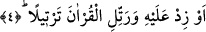

“Yahut bunu biraz azalt.” Yâni ibâdetle geçirecek olduğun yarı süreyi üçte bire
kadar eksilt. Bir başka ifâdeyle; bu süreyi gecenin yarısına varmayacak şekilde eksilt.
4. Ya da çoğalt ve Kur’an’ı tane tane oku.
“Ya da çoğalt!” Yâni ibâdetle geçirecek olduğun, “yarım” üzerine biraz artış yaparak
ibâdet süresini tüm gecenin üçte ikisine çıkar. Bütün bu tefsirlerden ortaya çıkan anlam;
Peygamber (s.a.) Efendimiz’in gecenin yarısını veya bundan daha azını ya da daha
çoğunun ibâdetle geçirme noktasında muhayyer olduğudur. Bir başka ifâdeyle burada
Peygamber (s.a.)’e şöyle denmiş oluyor: Adına gece denilen belli bir süreyle sınırlı
zaman diliminde onun çok az bir kısmı hâriç, namaza kalk bu süre gecenin yarısı
olabilir; ya da bu yarıdan birazını eksilt veya söz konusu yarı üzerine biraz daha ekle.
Bâzı âlimlere göre bu muhayyerlik gecelerin uzunluğu ve kısalığı göz önüne alınarak
verilmiş bir muhayyerliktir. Gece ile gündüzün süresi birbirine eşit olduğunda gecenin
yarısı ibâdetle geçirilirken, geceler kısa olduğunda bu süre biraz eksiltilecek, tersine
uzun günlere rastladığında biraz arttırılacaktır.
Zikredilen bu gece ibâdeti esnâsında “ve Kur’an’ı tane tane oku.” Yâni onu sükûnet
içerisinde harflerini iyice ayırt ederek tane tane oku. Öyle bir okuyuşla oku ki, onu
dinleyen harflerini sayabilme imkânını kendinde bulsun.
Bu nedenle İbn Mes’ûd (r.a.) Kur’ân’ın aceleyle okunmasını yasaklamış ve “Kur’an
okurken hedefiniz o sûrenin sonu olmasın” demiştir. Bir başka ifâdeyle; okuyucu ve
onunla birlikte bulunan kimse âyetlerin mânâları ve hakîkatleri üzerinde düşünebilsin
diye Kur’an’ı tane tane okumalıdır ki, Allah’ın zikri ile ilgili bir âyete geldiğinde O’nun
azametini, celâlini hissetsin. Müminlere yönelik bir vaad veya bir tehdîd âyetine
vardığında okuyan kişinin kalbinde ümid ve korku duyguları gelişsin. Ayrıca Kur’an’ın
nazmı bozuk ifâdelerden uzak kalsın...
Âyette yer alan “tertîl” kelimesinin kökü olan “retel” herhangi bir şeyin düzgün
olması ve düzgün biçimde dizilip intizâma girmesi demektir. Zemahşerî, Keşşaf ’’da
bunu şöyle açıklıyor: “Kur’an’ı tertîl üzere okumak demek, harflerini belirterek,
harekelerinin hakkını vererek ağır ağır ve acele etmeden okumak demektir.” Böyle
okunmalıdır ki âyetler papatyanın çiçeği misali insanın ağzına düzgün bir biçimde
dizilmiş seyrek dişlere benzesin. Yine Kur’an’ın tertîl üzere okunması demek sesi
titretmemek ve çabucak aceleyle okumamak demektir. Nitekim Hz. Ömer (r.a.) şöyle
der: En kötü yürüyüş çok süratli olanı, en kötü okuyuş ise hızlı ve çabuk olanıdır. Bu
öyle bir aceledir ki, okunan Kur’an âyetleri insanın ağzında üstüste çıkmış sık dişler
gibidir.
Kur’an’ın “tertîl” üzere okunması emri, insana gece namaz kılma emrinin Peygamber